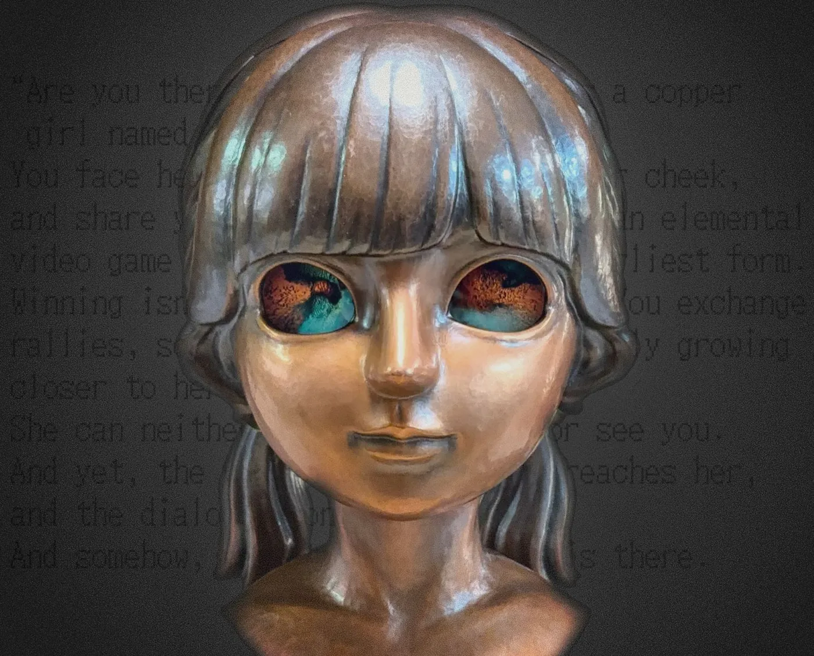

CÔGEIMU CREATOR COUNTDOWN｜カミエナインタビューCÔGEIMU CREATOR COUNTDOWN | KamiEna interview

展示開始に向け、10月7日から9日の3日間、制作メンバーそれぞれの視点から『ARE YOU THERE?』を振り返るインタビュー企画「CÔGEIMU CREATOR COUNTDOWN ― 3 DAYS / 3 CREATORS ―」をお届けします。 Counting down to the opening of the exhibition, “CÔGEIMU CREATOR COUNTDOWN ― 3 DAYS / 3 CREATORS ―” looks back on “ARE YOU THERE?” from the point of view of each member of the team, over three days from 7 to 9 October.
10月7日｜塩見亮介（担当：鍛金・造形）
10月8日｜金子尊（担当：エンジニアリング）
10月9日｜カミエナ（担当：ディレクション・プロデュース）
7 October | Shiomi Ryosuke (metal hammering and sculpting)
8 October | Kaneko Takeru (engineering)
9 October | KamiEna (direction and production)
工芸、技術、企画という異なる視点から、作品が生まれるまでの背景や制作の裏側を紹介します。 From three different angles, craft, technology and concept, we share the background of how the work came to be and what went on behind the scenes.
3日目は、ディレクション・プロデュースを担当したカミエナです。 Day three is KamiEna, who handled direction and production.
プロフィールProfile

カミエナKamiEna
ディレクター／プロデューサー（担当：ディレクション・プロデュース）Director / Producer (direction and production)
“創る”だけでなく“届ける”までをモノづくりと捉えるインディーゲームクリエイター。チーム制作を得意とし、ディレクション・プロデュースを中心に、企画・シナリオ・プログラム・絵作りなど幅広く担う。「楽しいを届ける」を軸に「kawaii × クセになる遊び」なゲームを作っている。An indie game creator who sees “delivering” a work as part of making it. At home in team projects, KamiEna leads direction and production while also covering planning, scenario, programming and visuals. With “delivering fun” at the core, KamiEna makes games that are kawaii and quietly addictive.
インタビューInterview
Q1今回の制作で、一番印象に残っている出来事・瞬間は？What moment from making this work stays with you the most?
一番印象に残っているのは、塩見さんと初めてお会いした時です。最初は「伝統工芸の職人さん」と聞いて少し身構えていたのですが、実際はとても温厚で、お互いの考えを尊重しながら話せる方でした。1時間の予定だった初回打ち合わせも、デジタルとアナログそれぞれの制作思想の話で盛り上がり、気づけば5時間以上に。この時に「この人となら面白いものが作れそうだ」と強く感じたのを覚えています。 What stays with me most is the first time I met Shiomi. At first, hearing “a traditional craftsman”, I was a little on guard, but he was actually very gentle, someone I could talk with while we each respected the other’s ideas. Our first meeting was meant to last an hour, but we got so caught up talking about our philosophies of making, digital and analogue, that before we knew it more than five hours had passed. I remember strongly feeling then, “With this person, I could make something really interesting.”
Q2制作の中で、一番大変だったことは？What was the hardest part of making it?
一番大変だったのは、普段とはまったく違う考え方でゲームを設計する必要があったことです。展示を前提にした一点ものなので、市販のコントローラーではなく独自の入力方法から考え、ハードウェアとソフトウェアを同時に設計していく必要がありました。さらに両方を一つのコンセプトでつなぎ、試作と調整を行き来しながら形にしていく。普段とは違う頭の使い方が必要で、企画段階からかなり苦労しました。 The hardest part was having to design a game with a completely different way of thinking. Because it is a one-off made to be exhibited, we had to start from our own input method rather than an off-the-shelf controller, and design the hardware and software at the same time. Then we had to tie both together with a single concept and shape it while going back and forth between prototypes and adjustments. It needed a different way of using my head, and I struggled a lot right from the planning stage.
Q3「工芸 × ゲーム」だからこそ生まれた面白さや価値は、何だと思いますか？What fun or value do you think came about precisely because it is “craft × game”?
工芸には「使うもの」としての役割があり、ゲームにも「遊んで楽しい」という根っこがある。その二つを無理にアートへ寄せるのではなく、それぞれを工芸として、ゲームとしてしっかり作り切ったうえで掛け合わせることで、結果として現代アートの領域に踏み込めたのではないかと思っています。限定性のある工芸だからこそ生まれる表現と、ゲームならではのインタラクションが互いに新しい可能性を引き出せたことに、大きな価値を感じています。 Craft has a role as “something to be used”, and games have their roots in “being fun to play”. Rather than forcing either toward art, we made each of them fully as craft and as a game, then combined them, and I think that is how we ended up stepping into the realm of contemporary art. I find great value in how the expression that only a limited, one-off craft can create and the interaction that only games can offer drew new possibilities out of each other.
Q4実際に体験する人に「ここを見てほしい／感じてほしい」と思うポイントは？What would you like people who play it to look at, or to feel?
ゲームは、映像や音楽、3DCG、シナリオ、プログラムなどを作っただけでは完成せず、実際に誰かが遊び、UX＝ユーザー体験が生まれた瞬間に最後のピースがはまるものだと思っています。今回の『ARE YOU THERE?』では、そこに工芸としての考え方も重ねました。見た瞬間に「かわいい」「近づきたい」と思える姿や、思わず頬に触れたくなる形、自然に手を添えられる触り心地まで含めて、実際に“使われる”ものとして作っています。そうして瞳を覗き、頬に触れ、一緒に遊ぶ中で、最初はただの銅像だったカガネに、次第に人格や魂が宿っているように感じてほしい。「作品で遊んだ」ではなく、「作品と遊んだ」「カガネと遊んだ」と感じてもらえたら嬉しいです。 I believe a game isn’t finished just by making the visuals, music, 3DCG, scenario and programs; the last piece falls into place the moment someone actually plays it and a UX, a user experience, is born. In “ARE YOU THERE?”, we layered the thinking of craft on top of that. Everything, from a figure that makes you think “cute” and “I want to get closer” at first sight, to a shape whose cheeks you can’t help wanting to touch and a feel that lets your hands rest there naturally, was made as something to actually be “used”. As you look into her eyes, touch her cheeks and play together, I hope you’ll feel that Kagane, at first just a copper statue, gradually comes to hold a personality and a soul. I’d be happy if you felt not “I played a work” but “I played with a work”, “I played with Kagane”.
Q5なぜ「瞳を覗く」「頬に触れて体温を伝える」という行為をゲーム体験にしたのですか？Why did you turn “looking into her eyes” and “touching her cheeks to pass on your warmth” into the game experience?
「瞳を覗く」という体験は、ぜひ本HP内の01Yukiのステートメントにも記載があるので読んでみて頂きたいのですが、端的に言うと塩見さんの作品を初めて見た時の感覚が原点です。細かな装飾に囲まれた中で、目だけがぽっかりと暗い空洞になっていて、思わず吸い込まれるように覗き込みたくなる。その感覚をそのままゲーム体験にできないかと考えました。一方、頬から体温を伝えるアイデアは、塩見さんの「金属だからこそできる入力にしたい。金属といえば例えば熱伝導があるよねぇ～」という一言がきっかけです。人のぬくもりが金属の少女へ伝わり、そこに魂が宿っていく。もともと表現したかったコトにピッタリなアイデアでもあったため、そこを起点に一気に02 Kaganeの企画を練りました。このアイデアは普段金属に触れ続けている鍛金家だからこそ、出てきたアイデアだなと思っており、鍛金×ゲームの見事な化学反応だなーと感じています。 “Looking into the eyes” is described in the statement for 01 Yuki on this site, which I’d love you to read, but in short, its origin is the feeling I had when I first saw Shiomi’s work. Amid fine ornament, only the eyes were dark, open hollows, and you couldn’t help wanting to look in, as if drawn inside. I wondered whether that feeling could become a game experience as it was. The idea of passing on warmth through the cheeks, on the other hand, came from a remark of Shiomi’s: “I want an input only metal can do. Speaking of metal, there’s heat conduction, right?” A person’s warmth reaches a metal girl, and a soul comes to dwell there. It fitted exactly what I had wanted to express from the start, so from there we worked out the concept for 02 Kagane in one go. I think it’s an idea that could only come from a metalsmith who touches metal every day, and I feel it was a wonderful chemical reaction between metal hammering and games.

Q6『ARE YOU THERE?』というタイトルには、どんな意味を込めていますか？What meaning did you put into the title “ARE YOU THERE?”?
コロナ禍を経て、直接顔を合わせて話すこと、相手と向き合って対話することの大切さを改めて感じ、本作のテーマを「対話」としました。画面越しのコミュニケーションが当たり前になるほど、SNSやオンラインミーティングの先にいる相手の「実在感」を感じにくくなっているようにも思います。「Are you there?」は、オンラインでのやり取り中に返事や音声が途切れた時、「そこにいる？」と相手の存在を確かめるために使われる言葉です。本作では、最初はただの銅像だったカガネと目を合わせ、触れ、一緒に遊んでいく中で、少しずつそこに人格や気配を感じていく。遊び終えた時、ふと彼女に「Are you there?」と問いかけたくなる。そんな、対話の中で誰かの存在を感じていく体験を、このタイトルに込めています。 After the pandemic, I felt anew how important it is to talk face to face and to face someone in dialogue, so I made “dialogue” the theme of this work. The more communication through screens becomes normal, the harder it seems to feel that the person on the other side of social media or an online meeting is really there. “Are you there?” is what we say during an online exchange when replies or audio cut out, to check that the other person is still present. In this work, as you meet the eyes of Kagane, at first just a copper statue, touch her and play together, you gradually sense a personality and a presence there. When you finish playing, you suddenly want to ask her, “Are you there?” That experience, of sensing someone’s presence through dialogue, is what I put into this title.
Q7フランスでの展示を経て、今後CÔGEIMUをどう展開していきたいですか？After the exhibition in France, how would you like to take CÔGEIMU forward?
CÔGEIMUとしては、今回の「02 Kagane」で終わりではなく、ここからさらにいろいろな「工芸 × ゲーム」に挑戦していきたいと思っています。「01 Yuki」も、プロトタイプとして終わらせるのではなく、改めて作品として完成させたいですし、KaganeやYukiとはまったく違う遊び方や形を持った作品にも挑戦したいです。工芸とゲームを掛け合わせることで、まだ見たことのない体験をどこまで作れるのか、これからも探っていきたいと思っています。また今回のフランス展示をはじめ、「02 Kagane」についても、日本はもちろん、ほかの国々でも展示していけたらと思っているので、その展開も進めていきたいです。 For CÔGEIMU, “02 Kagane” is not the end; from here I want to take on many more kinds of “craft × game”. I’d like to finish “01 Yuki” properly as a work rather than leave it as a prototype, and I also want to try works with ways of playing and forms completely different from Kagane and Yuki. I want to keep exploring how far we can go in creating experiences no one has seen yet by combining craft and games. And starting with this exhibition in France, I hope to show “02 Kagane” in Japan, of course, and in other countries too, so I want to move that forward as well.
最後に、Anima Ludens（フランス展示）に向けて一言Finally, a word ahead of Anima Ludens (the exhibition in France)
長い芸術の歴史を持つフランスで、『8番出口』をはじめ素晴らしい作品や作家の皆さんと並んで展示いただけることを、とても光栄に思っています。Kaganeにとって初めての展示であり、僕自身にとっても初の海外展示なので、ドキドキしつつも、現地の皆さんがどんなふうに遊び、何を感じてくれるのかとても楽しみです。まずはフランスでしっかり作品を届けて、その様子も日本の皆さんにお伝えしていけたらと思います！ I’m deeply honoured that the work will be shown in France, with its long history of art, alongside wonderful works and artists, starting with “The Exit 8”. It’s Kagane’s first exhibition and my own first exhibition abroad, so I’m nervous, but I’m really looking forward to seeing how people there play and what they feel. First, I want to deliver the work properly in France, and then share how it went with everyone in Japan!